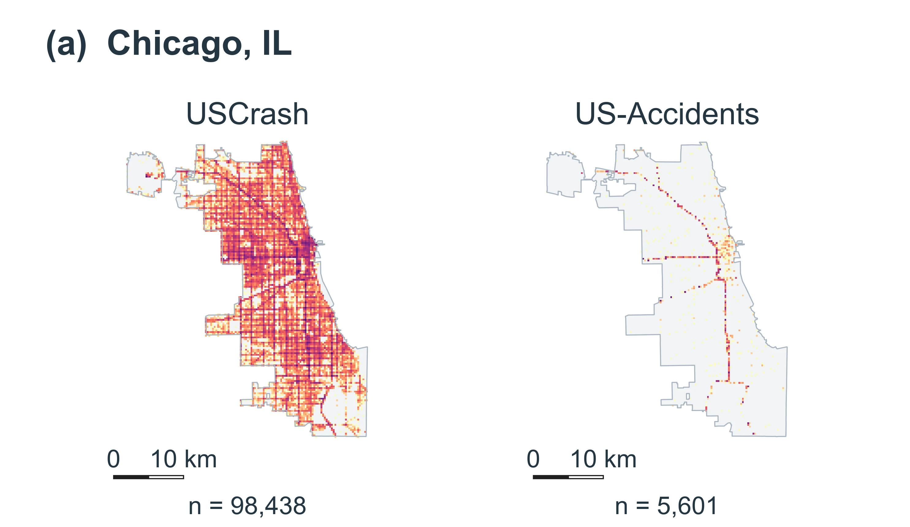
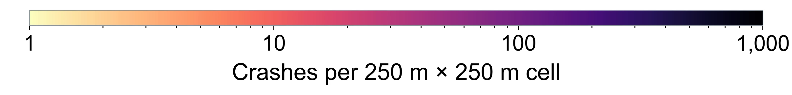

USCrash
A Harmonized U.S. Nationwide Traffic Crash Dataset
A crash-level research resource constructed from official state records, with MMUCC-guided semantic harmonization and reproducible preparation code.

Crash-level records
States represented
Overall time span
Schema fields
USCrash: scope and contributions
USCrash harmonizes heterogeneous official state crash records to support cross-state and longitudinal traffic safety research.
Broad coverage and large scale
Over 65.7 million crash records from 41 states and DC, spanning 2001–2026 and covering fatal, injury, and property-damage-only crashes.
Cross-state semantic harmonization
77 fields across eight groups, with MMUCC-guided mappings that align state-specific definitions while retaining source values and provenance.
Validation and reproducibility
Official-count and spatial comparisons characterize data consistency and coverage. Documented mapping rules and processing code support reproducible analysis.
Comparison with existing public U.S. crash datasets
| Dataset / source | Geography / years | Crash types | Scale | Data integration & features |
|---|---|---|---|---|
| FARSNational fatal-crash census | Nationwide1975–2024 | Fatal crashes only | 1.87M | Standard federal schema with linked crash, vehicle, and person data; public |
| CRSSNational sampling | Nationwide2016–2024 | Fatal, injury, and PDO crashes | 0.43M | Standardized survey data and weights for national estimates |
| HSISOfficial state records | 7 states1985–2024 | Fatal, injury, and PDO crashes | ~5.0M | Harmonized crash, roadway, and traffic data (request-based access) |
| CISSIn-depth crash sample | Nationwide2017–2024 | Tow-away vehicle crashes | 0.027M | Detailed crash, vehicle, and injury investigations |
| US-AccidentsThird-party feeds | 49 states2016–2023 | Unknown | 7.73M | Common event representation; severity reflects traffic impact rather than injury |
| USCrashOfficial state records | 41 states + DC2001–2026 | Fatal, injury, and PDO crashes | 65.76M | 77 fields covering harmonized crash characteristics, source values, and provenance. |
Comparison based on manuscript Table 1; USCrash scale reflects the current corrected release. M = million records; PDO = property-damage-only.
From heterogeneous state records to a harmonized crash-level dataset
The workflow integrates heterogeneous state crash records through source acquisition, crash-level preparation, and MMUCC-guided semantic harmonization. Source identifiers, raw values, and provenance are retained to support traceability.
Select a stage to view methodological details.
Loading the research framework…

A common schema for crash-level records
The common schema comprises 77 fields across eight groups, covering identifiers and provenance, time, location, severity, vehicles and road users, collision events, environmental conditions, and roadway characteristics and behavioral factors.
Loading schema groups…
Select a schema group to inspect its fields, then select a field to view its definition. Source codes, precision, and provenance remain part of the record.
Spatial, temporal, and attribute coverage
USCrash comprises 511 state–year files from 41 states and the District of Columbia. Temporal coverage and attribute availability vary by source; 2026 data are partial.
Select a state to examine coverage, using the map or the list. Albers equal-area projection. State outlines: U.S. Census Bureau, 2023. Alaska and Hawaii are separate insets; their scales differ from the contiguous states.
Loading state coverage…

View the state × year coverage matrix +
Filled cells indicate a retained annual file. Color intensity represents annual crash counts. Source reporting scope varies; Oklahoma includes a K/A/B subset, and North Carolina 2016–2020 includes fatal and serious-injury crashes.
Distributions of crash characteristics
Examine the distributions of temporal, severity, collision, environmental, and roadway characteristics. Each distribution identifies its analysis population and denominator.
Loading analysis tables…

Validation against official counts and comparison of spatial coverage
Crash counts are compared with official 2021 totals for 38 cities and two Florida counties. Spatial comparisons examine the geographic distribution of records within selected areas.
We compare crash counts with official reports and query systems for the same reference year and geographic scope. The manuscript presents 20 cities and counties; the interactive chart below uses the expanded 40-area benchmark from the supplementary analysis.
USCrash generally remains close to official totals, while US-Accidents has larger, location-dependent differences. The maps below examine where those differences occur within cities. Count agreement assesses the retained populations; it does not establish incident-by-incident matching.
Comparison with official crash counts
Each point represents one area and dataset. The dashed line indicates equality with the official count. Hover over or focus on a point to view exact counts.
Inspect all 40 areas and official references +
| Area | Official | USCrash | Difference | US-Accidents | Difference | Source |
|---|
Difference = (dataset − official) / official. Florida entries use county boundaries; all other entries are cities. Selections follow the benchmark's documented source populations.
Dataset Spatial Coverage Comparison
Compare USCrash and US-Accidents across 11 cities and Hillsborough County using identical geographic extents and grid resolution.
Manuscript Figure 5 · four cities ↗


Comparison of spatial coverage
In these selected areas, USCrash records extend across a broader portion of the local street network, whereas US-Accidents records are more concentrated along major corridors.
Within each area, both datasets use identical map extents, 250 m × 250 m cells, and a shared logarithmic color scale. Plotted geolocated records may differ from the benchmark's reporting populations. San Francisco excludes the offshore Farallon Islands.
Paper, data, and code
The research resources comprise annual crash-level CSV files, documented harmonization rules, and code for reproducible data preparation and analysis.
Original USCrash documentation is licensed under CC BY-NC 4.0. Source-data redistribution terms and the code license remain under review. License scope ↗
# Read one state-year file after download
import pandas as pd
crashes = pd.read_csv(
"Unified_MMUCC6/data/crash/AK/"
"AK_crashes_harmonized_2021.csv",
low_memory=False
)
# Inspect the harmonized fields
print(crashes.shape)
print(crashes.columns.tolist())Citation and contact
USCrash: A Harmonized U.S. Nationwide Traffic Crash Dataset
Lei Han · University of Central Florida
lei.han@ucf.edu ↗Manuscript citation preview. Publication year, venue, and DOI will be updated when finalized.
@misc{han_uscrash,
author = {Han, Lei},
title = {{USCrash}: A Harmonized U.S.
Nationwide Traffic Crash Dataset},
note = {Manuscript; publication details pending}
}